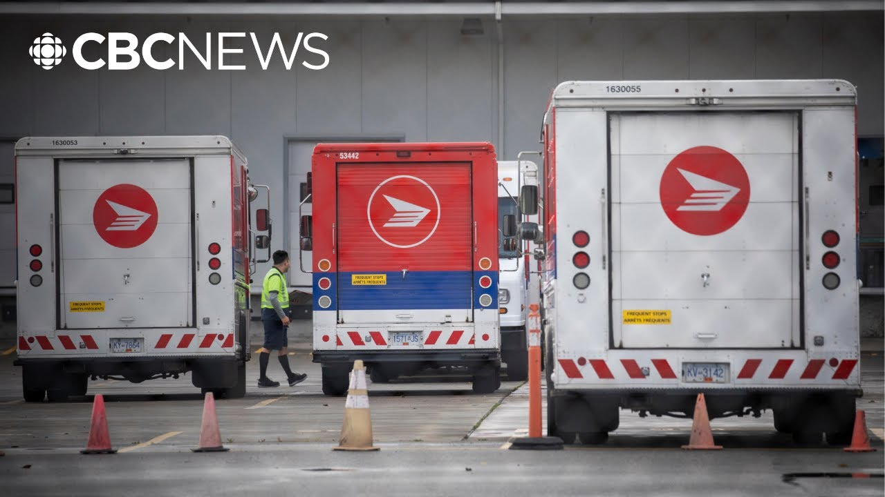

【加拿大邮政罢工通知引发对成本和销售的担忧，小企业主表示】
Summary: A small business owner shares concerns about potential Canada Post strike impacts, including sales drops, higher costs, and disrupted customer trust during peak season.
摘要： 一位小企业主表达了对加拿大邮政可能罢工的担忧，包括销售下滑、成本上升以及在旺季期间客户信任受损。

⏱️ Estimated Reading Time: 8 min
Let's return to one of our top stories.
让我们回到我们的头条新闻之一。
Another potential Canada Post strike starting Friday.
加拿大邮政可能从周五开始再次罢工。
Word of it already has small business owners worried about delays and rising costs.
这一消息已经让小企业主担心延误和成本上升。
One of them is my next guest who depends on Canada Post to get his products into the hands of customers.
其中之一是我的下一位嘉宾，他依赖加拿大邮政将产品送达客户手中。
Thomas Barniki is in Calgary and he's the owner of a luxury consignment store and an ecommerce shoe care business.
托马斯·巴尔尼基在卡尔加里，他是一家奢侈品寄售店和电子商务鞋护理企业的老板。
Thomas, appreciate you taking the time.
托马斯，感谢你抽出时间。
Thank you.
谢谢。
How's it going?
你好吗？
I'm great.
我很好。
Well, tell me how you are though.
不过，告诉我你的情况。
Tell us more about your worries if this strike goes ahead.
如果这次罢工发生，请详细谈谈你的担忧。
Um, I'm doing all right and thank you for asking.
嗯，我还可以，谢谢你的关心。
Uh, my worries I think are consistent with what happened uh from the previous strike which was November 15th to the December 17th.
呃，我认为我的担忧与之前11月15日至12月17日的罢工情况一致。
um over that period which is typically our our bread making season tease us up for strategic planning uh in the next year which is the year now 2025.
嗯，在那段通常是我们旺季的时期，这影响了我们为明年（现在是2025年）的战略规划。
Uh in that period of the strike uh both my businesses dipped in sales uh respectively 16% on the luxury consignment side and 11% on the shoe care side.
呃，在罢工期间，我的两家企业的销售额分别下降了16%（奢侈品寄售）和11%（鞋护理）。
And this is uncharacteristic like this is the season when we would grow.
这很不寻常，因为这是我们通常增长的季节。
We're both businesses are young.
我们的两家企业都还年轻。
They're not mature businesses.
它们不是成熟的企业。
So, we're heavily in our growth phase.
所以，我们正处于快速增长阶段。
And those dips uh prevent us from hiring more employees and therefore contributing to the overall economy.
而这些下滑呃阻碍了我们雇佣更多员工，从而影响了整体经济。
And so, how much of your business relies on Canada Post?
那么，你的业务有多大程度依赖加拿大邮政？
So, as far as shipping goes, I would say prior to that uh fall Christmas strike, we saw a 90.
就运输而言，我想说在那次秋季圣诞罢工之前，我们90%的运输依赖加拿大邮政。
we would rely on Canada Post for 90% of our overall shipments.
我们90%的运输依赖加拿大邮政。
Uh post that strike it certainly changed.
呃，罢工后情况确实改变了。
uh it switched till about about 25 to 30% usage of Canada Post and therefore the those other percentiles were made up using primarily UPS and purilator and yeah and so right now I was going to ask you a little bit about that because right now in this country there's a growing by Canadian movement with people choosing to support Canadian businesses like yours traveling across the country this summer.
呃，现在我们对加拿大邮政的使用降到了25%到30%，其余部分主要由UPS和Purolator填补。是的，所以我正想问你一点，因为现在国内有一个“支持加拿大”的运动，人们选择支持像你这样的加拿大企业，今年夏天在全国旅行。
How do you think a potential can Canada post strike could affect this momentum for small businesses like yours?
你认为加拿大邮政可能的罢工会如何影响像你这样的小企业的这种势头？
Uh if we if they ship packages domestically, I would say just heavily um not only for quickly scrambling again to update their websites, update their software infrastructure, um how they communicate to customers, how they uh manage those customer expectations.
呃，如果他们国内运输包裹，我想说影响会很大，不仅是因为要匆忙更新网站、软件基础设施，呃，还要调整与客户的沟通方式，管理客户预期。
uh and but also just the the trust going forward.
呃，还有未来的信任问题。
Um it's a shame that the months following the December uh return to work uh nothing could be done to prevent this potential strike from seemingly occurring again.
嗯，遗憾的是，在12月复工后的几个月里，似乎没有采取任何措施来防止这次可能的罢工再次发生。
And what about the expense, Thomas?
那么费用呢，托马斯？
Is it more expensive to use other services than Canada Post?
使用其他服务比加拿大邮政更贵吗？
Uh I got a notification on Shopify, which is the platform we use.
呃，我在我们使用的平台Shopify上收到通知。
Uh UPS is increasing every single label we print and ship domestically by $2.
呃，UPS将我们打印和国内运输的每张标签价格提高了2加元。
So um yes.
所以，嗯，是的。
So it's more expensive.
所以更贵了。
So you'd rather be using Canada Post.
所以你更愿意使用加拿大邮政。
It's cheaper and it goes to more places, right?
它更便宜，覆盖范围更广，对吧？
Is it I I think any business small or big is going to be incentivized by by costs no matter what.
我认为无论大小企业都会受成本驱动。
But uh obviously like trust plays into it and this scenario is now is seemingly again going to happen and um and it's definitely a consideration going forward uh because managing all those things I previously mentioned customer relationships expectations and you want to protect your business.
但呃显然信任也很重要，而现在这种情况似乎又要发生，嗯，这绝对是未来的一个考虑因素，因为要管理我之前提到的客户关系、预期，还要保护你的业务。
So, uh, you know, maybe paying a little bit extra to a competitor has a little bit of inherent insurance risk against these kind of things happening.
所以，呃，你知道，也许多付一点钱给竞争对手，可以对这些事情的发生有一点内在的保险风险。
So, as the negotiations take place from both sides, what is your message to them as a small business owner?
那么，随着双方进行谈判，作为小企业主，你想对他们说什么？
It affects everybody.
这影响每个人。
Um, it affects obviously small businesses, but it affects our customers.
呃，显然影响小企业，但也影响我们的客户。
And you know our customers sometimes while we're don't get me wrong we're super humbly and grateful for them to be supporting us we are also in in the e-commerce world competing with Amazon and um and therefore we have to keep that in mind we have to be cognizant of that um and we we want to compete directly we want to be able to service our customers in a timely costefficient manner
你知道，我们的客户有时——别误会，我们非常谦卑和感激他们的支持——但我们在电子商务领域也在与亚马逊竞争，嗯，所以我们必须记住这一点，我们必须意识到这一点，嗯，我们想直接竞争，我们希望能够以及时且成本高效的方式服务客户。
Uh and it also affects all the people working at your which are also local businesses.
呃，这也影响所有为你工作的人，他们也是本地企业。
Those Canada Post drop off pickup locations.
那些加拿大邮政的取件点。
Uh those people tend to not work directly for Canada Post.
呃，那些人通常不直接为加拿大邮政工作。
They offer service stations for Canada Post, but they are local businesses and they're owned and operated by local people.
他们为加拿大邮政提供服务站，但他们是本地企业，由当地人拥有和经营。
Thomas, I hope you you're able to kind of navigate through all this.
托马斯，希望你能顺利应对这一切。
Uh thank you.
呃，谢谢。
Thomas Barnicki in Calgary.
卡尔加里的托马斯·巴尔尼基。
Appreciate that.
非常感谢。
Thank you.
谢谢。
Have a good one.
祝你顺利。
You too.
你也是。
[Music]
[音乐]